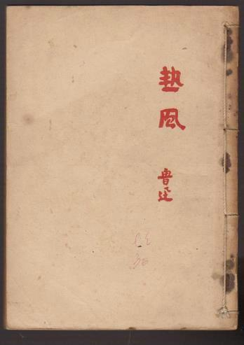
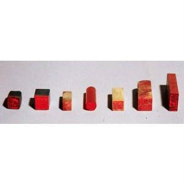
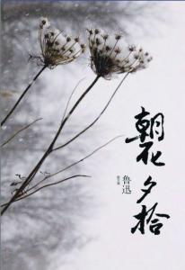
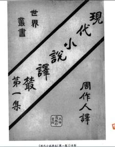
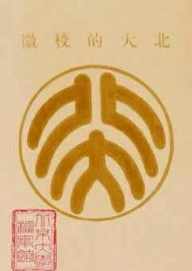

Related pictures
-


- 

Lu Xun's novels have unique material selection. in the choice of themes, Lu Xun only selected the model of "brave generals and advisors, chivalrous thieves and spoils, monsters, immortals, gifted scholars and beauties, and later prostitutes, clients and rogue slaves" in classical literature to make reforms. with the enlightening creation purpose of "for life", Lu Xun created the two main themes of modern literature "representing peasants and intellectuals". His material is "mostly drawn from the unfortunate people in morbid society." Lu Xun has an extremely unique vision when dealing with these subjects. When observing and expressing his hero, he has his own unique perspective, that is, he always pays attention to the mental "suffering" of intellectuals and peasants in the "sick society". Therefore, in "hometown", the most shocking thing is not leap soil's later poverty, but the numbness of his mind shown by his "master". The exploration of the subject matter of intellectuals also focuses on their mental trauma and crisis. For example, in "On the Restaurant", the old and hot eye saw that most heroes who fought alone in the 1911 Revolution could not get rid of their lonely fate. Under the pressure of strong feudal tradition, they returned to the original point and consumed their lives in the declining years. Lu Xun's reforms evolved into two major novel plots and structural patterns of "seeing/being seen" and "returning to hometown" in "Scream" and "Hesitation". In the novel "Showing the Public", all people's actions are only "watching" and the relationship is only "watching" and "being watched", thus forming a binary opposition between "watching" and "being watched", which is shown in novels such as "Madman's Diary", "Kong Yiji" and "Blessing". In the "return to hometown" mode, Lu Xun tells not only other people's stories but also his own stories. the two permeate and influence each other, forming a polyphony. for example, in "blessing", Lu Xun talks about the triple relationship of "I", "Xianglin sister-in-law" and "Lu town". this relationship includes both the stories of "I" and "Lu town" and the stories of Xianglin sister-in-law and Lu town. however, readers often ignore the former. the former tells a story of "forever drifters" while the latter tells a story of cannibalism in feudal society. The two stories are connected in series, interrogating the soul of "I" with the question of Sister Xianglin, thus revealing the internal connection between "I" and Lu Zhen's traditional spirit. Novels similar to this pattern include "Hometown", "Lonely Man" and "In Restaurant".
His material is "mostly drawn from the unfortunate people in morbid society." Lu Xun has an extremely unique vision when dealing with these subjects. When observing and expressing his hero, he has his own unique perspective, that is, he always pays attention to the mental "suffering" of intellectuals and peasants in the "sick society". Therefore, in "hometown", the most shocking thing is not leap soil's later poverty, but the numbness of his mind shown by his "master". The exploration of the subject matter of intellectuals also focuses on their mental trauma and crisis. For example, in "On the Restaurant", the old and hot eye saw that most heroes who fought alone in the 1911 Revolution could not get rid of their lonely fate. Under the pressure of strong feudal tradition, they returned to the original point and consumed their lives in the declining years. Lu Xun's reforms evolved into two major novel plots and structural patterns of "seeing/being seen" and "returning to hometown" in "Scream" and "Hesitation". In the novel "Showing the Public", all people's actions are only "watching" and the relationship is only "watching" and "being watched", thus forming a binary opposition between "watching" and "being watched", which is shown in novels such as "Madman's Diary", "Kong Yiji" and "Blessing". In the "return to hometown" mode, Lu Xun tells not only other people's stories but also his own stories. the two permeate and influence each other, forming a polyphony. for example, in "blessing", Lu Xun talks about the triple relationship of "I", "Xianglin sister-in-law" and "Lu town". this relationship includes both the stories of "I" and "Lu town" and the stories of Xianglin sister-in-law and Lu town. however, readers often ignore the former. the former tells a story of "forever drifters" while the latter tells a story of cannibalism in feudal society. The two stories are connected in series, interrogating the soul of "I" with the question of Sister Xianglin, thus revealing the internal connection between "I" and Lu Zhen's traditional spirit. Novels similar to this pattern include "Hometown", "Lonely Man" and "In Restaurant".
in addition, on the one hand, Lu Xun has been exploring the form of subject infiltration into novels. In The Restaurant and The Lonely, the narrator "I" and the characters in the novel are externalization of two different sides of "self" or two sides of inner contradiction, thus the whole article has the nature of dialogue and mutual refutation of self-soul. On the other hand, Lu Xun is also pursuing the implicit, restrained, simple and concise language style of expression. He once said, "I try my best to avoid the nagging of writing. I only want to pass on the meaning to others, so I would rather have no foil." To this end, when introducing his experience in writing novels, he also said, "to draw a person's characteristics with great economy, it is best to draw his eyes." "There is no background in the old Chinese operas. There are only a few people in the flower paper sold to children for viewing in the New Year (but now there are many backgrounds in the flower paper). I am convinced that this method is suitable for my purpose." This also shows that Lu Xun focuses on the spiritual features of the characters when describing them, and pays great attention to the artistic tastes of farmers in the description. Lu Xun studied the artistic characteristics of old operas and New Year pictures that farmers like, and applied them in his artistic creation, making his novels show strong national characteristics. However, he extensively drew on the artistic experience of poetry, prose, music, fine arts and even drama to create novels, and tried to merge them into one batch. As a result, "poetic novels" (Regret for the Past, Social Drama, etc.), prose novels (Rabbit and Cat, Duck Comedy, etc.), even "dramatic novels" (Rise to Death, etc.), and so on appeared.
On the other hand, Lu Xun is also pursuing the implicit, restrained, simple and concise language style of expression. He once said, "I try my best to avoid the nagging of writing. I only want to pass on the meaning to others, so I would rather have no foil." To this end, when introducing his experience in writing novels, he also said, "to draw a person's characteristics with great economy, it is best to draw his eyes." "There is no background in the old Chinese operas. There are only a few people in the flower paper sold to children for viewing in the New Year (but now there are many backgrounds in the flower paper). I am convinced that this method is suitable for my purpose." This also shows that Lu Xun focuses on the spiritual features of the characters when describing them, and pays great attention to the artistic tastes of farmers in the description. Lu Xun studied the artistic characteristics of old operas and New Year pictures that farmers like, and applied them in his artistic creation, making his novels show strong national characteristics. However, he extensively drew on the artistic experience of poetry, prose, music, fine arts and even drama to create novels, and tried to merge them into one batch. As a result, "poetic novels" (Regret for the Past, Social Drama, etc.), prose novels (Rabbit and Cat, Duck Comedy, etc.), even "dramatic novels" (Rise to Death, etc.), and so on appeared.
Lu Xun's creative energy in the 1930s was mainly focused on essays. however, he did not forget the creation of novels and contributed his last innovative work, new stories. This collection of novels still shows Lu Xun's unruly imagination and strong creativity: it makes a new impact on the creation norms of modern Chinese novels created in "Scream" and "Wandering" and seeks for new breakthroughs. In New Stories, Lu Xun consciously broke the boundary of time and space and adopted the method of "mixing ancient and modern". In addition to the historical records of most of the main characters in the novel, he also created some minor dramatic interludes, adding a large number of modern languages, plots and details to their words and deeds. It is free to use modern language and to ridicule and expose the reality in a "slick" manner. At the same time, there are "solemn" and "absurd" colors and intonation melodies in many articles, which complement each other and penetrate into digestion. For example, in "mending the sky", the grandeur and magnificence of nuwa's creation of man is desirable. at the end, it is extremely absurd for posterity to camp on the belly of a dead body under the banner of "creating man and mending the sky". this absurdity has completely disappeared the great feeling in the previous article and turned it into a kind of sadness in history.
essay featuresLu Xun devoted most of his life and painstaking efforts to the creation of essays in his life, especially in the most mature years of his later thoughts. His essays are highly critical. Lu Xun once divided the essays into "social criticism" and "civilization criticism", emphasizing the connotation and function of "criticism" (criticism). If you look at the 14 anthologies published by Lu Xun before his death, you can see a chronicle of the ideological and cultural struggle that never stops criticizing, debating, and fighting back against: the criticism of feudal ethics and old traditions from Hot Wind, and the debate with the retro school, continue to the protest against the fascist dictatorship of the Kuomintang government and the fight back against the "left-leaning" line within the Communist Party of China. The unyielding spirit shown in Lu Xun's essays, which is "not to defeat the enemy, but to fight more than ever", is fundamentally against the tradition of "forgiveness" and "moderation" of Chinese culture and intellectuals of Chinese scholar-bureaucrat culture and embodies the rebellious and heterogeneous nature of Lu Xun's writings.

Lu Xun's criticism is different from the general ideological criticism. he always focuses his criticism on people, their psychology and soul: this is the care of a writer. As Lu Xun himself said, "My habits are not very good. Every time I refuse to believe what is on the surface, I often feel suspicious." Therefore, what he is most concerned about is people's hidden and even self-conscious psychological state. For example, Lu Xun saw the distorted and despicable resistance psychology caused by feudal hierarchy and family system behind the "national abuse" that people are accustomed to. Lu Xun also proposed a "back-pushing" way of thinking, i.e., "look at the positive articles from the opposite side." according to this, he wrote some essays, such as "little miscellaneous feeling": "those who claim to be thieves do not need to be protected, but they are good people instead; The self-proclaimed gentleman must be guarded against, but the opposite is a thief ":this is so profound as to be creepy, and naturally it is also" malicious ". Lu Xun's essay thinking is also nonstandard. He often takes a different approach from the conventional thinking route and opens up a completely new way of thinking. For example, in his famous academic essay Wei Jin Style and the Relationship between Articles and Drugs and Wine, he reached a different conclusion from this way of thinking: Ji and Ruan's destruction of Confucian ethics is only a superficial phenomenon, but in fact it is a manifestation of excessive love. The sharp and vicious nature of Lu Xun's essays is hard to accept. It also lies in his imagination, which is also contrary to the "convention". On the one hand, Lu Xun connects people and things that seem impossible to be linked as far apart as appearance and form. On the other hand, he finds the connection between "God" and "God" in the huge contrast between "form" and "form". On the other hand, we can discover and feel the unique connection between history and reality. In "The Crisis of Essays," the "Fireworks Woman, unable to pull her business in the alley, had to paint and powder and come to the road at night". In this way, the nobleman and his palace at one end and the "most unclean place" on the ground at the other end have achieved "sacred" banter "and" elegant "evil vulgarization after Lu Xun's involvement.
the basic method Lu Xun adopted in his polemics was to "exclude specific and individual people and things from individuality, concreteness and particularity, to make a general meaning, to understand the overall generalization, and to give a concise name, which was upgraded from" this one "to" this kind of "specimen", while retaining the image and specific characteristics, and becoming the unity of "individual" and "class". The 14 essays written by Lu Xun during his lifetime have created many wonderful and typical images, such as "bulldog", "Xizai", "villains in foreign markets", "revolutionary foreman" and so on. These images are often a kind of social type refined by dissecting a person's words and deeds in one place at a time as a typical phenomenon, "attacking one point but not the rest". These images have a meaning beyond time and space, which makes this type of "common name" as long-term artistic vitality as Ah Q and Xianglin sister-in-law in Lu Xun's novels.
the language of Lu Xun's essays is unrestrained and highly creative in keeping with the unconstrained style of thinking. Lu Xun's essays can be said to have brought into full play the expressive and lyrical functions of Chinese. In his essays, either spoken language is mixed with classical Chinese sentence patterns; Or the cross-use of parallelism and repetition of situations; Or long sentences and short sentences, declarative sentences and rhetorical questions crisscross each other, mixing the simplicity of prose with the beauty and vigour of parallel prose, which can be described as "affectionately rich". For example, in "Remembering the Prince of Liu Hezhen," the "true warrior" dares to face up to the bleak life and the dripping blood. " It is full of vigor and vitality. On the other hand, the language of Lu Xun's essays is anti-standard. He intentionally destroys grammatical rules, violates conventional usage, and creates an inharmonious "ao ti" in order to break the shackles of language on thought, and at the same time achieve absurd and extraordinary aesthetic effects. For example, he sometimes organizes words with opposite or incompatible meanings together, which is profound in illogical ways: "rational oppression", "kneeling to revolt", "galloping on young seedlings", etc.
prose featuresLu Xun's essays are few, but they can be described as excellent articles. these articles are included in "flowers in the morning and flowers in the evening" and "weeds". "Flowers in the Morning and Flowers in the Evening" is Lu Xun's recollection of his childhood and adolescence. It is also a fragment of the author's life in adolescence. It includes his childhood impression of Shaoxing, his basic growth experiences such as studying in Nanjing, studying in Japan, and teaching in Shaoxing after returning home, especially those who describe his hometown. Compared with his essays, these articles are more clear, pure and cordial. "Flowers in the Morning and Flowers in the Evening" focuses on the depiction of human feelings in the world. It not only focuses on vivid natural situations (such as "From Grass Garden to three pools mirroring the moon") and vivid recollections of juvenile actions (such as "Shexi"), but also focuses on portraying living characters with generous family ties, such as Mr. Fujino, Mr. Fan Ainong and Mr. Shou Jingwu of "three pools mirroring the moon". The author did not write them stiffly from the moralist's point of view, but used emotion to drive the group to remember. The most representative figure is the long mother. In works such as A Chang and Shan Hai Jing, Lu Xun tried his best to tell them objectively and did not comment on or criticize them casually. In simple words and stories, the readers were deeply moved by the kindness, simplicity, enthusiasm and beautiful heart of his mother. In contrast, the dissatisfaction with the dull, absurd and foolish world in the old life in "Morning Flowers and Evening Harvest" is not prominent.The old beauty and love can be regarded as not only Lu Xun's spiritual refuge when he was depressed, but also as his tired body and mind resting place "fighting for the present".
the prose poetry collection weeds, which has a completely different style from "gossip" in "morning flowers and evening collection", presents another "Lu Xun style". In "Wild Grass", Lu Xun's works pour out the hazy, heavy and strange dreams, and the dark and mysterious ghosts. Fantastic scenes and absurd plots; Uncertain vague ideas, incomprehensible abnormal feelings; Magnificent, Leng Yan's color, strange and sudden imagination, rich poetry ... One of the major reasons for these "strange and sudden variations" is the special language-from the variation of everyday language, which combines magnificence with difficulty. On the other hand, the reason is the variant style of "Wild Grass": it obviously shows the poeticization and fictionalization of prose (the trembling of the decaying line) and dramatization (the passer-by). The general artistic feature of Wild Grass is its introverted lyric tendency. It shows the "truth" and "depth" of the soul, and it is a conscious experience and breakthrough of the "human" own predicament. Lu Xun borrowed, absorbed and successfully used symbolism here, but he was obviously more self-reliant than Li Jinfa's hard transplant at the same time. Therefore, it has also achieved great success in the exploration of artistic expression techniques. Weeds, which expresses the uncertainty of the theme, contains almost all aspects of Lu Xun's emotion, character and even the whole inner world. It is also the spiritual history of Lu Xun, a cultural critic in the Enlightenment period, during his transition to a combatant after the Enlightenment period.
academic thoughtsLu Xun's thought on literary history is extremely rich and profound, giving off brilliant light with the characteristics of the times. He creatively engaged in the compilation of literary history, leaving two monographs on literary history to later generations-"A Brief History of Chinese Novels" and "Outline of Chinese Literary History", which have made great contributions to the study of literary history in our country. It is extremely regrettable that due to the realistic and objective conditions that were not conducive to creation at that time, a complete history of Chinese literature that he had planned to write could not be completed in his lifetime. There are two major concepts that support Lu Xun's academic creation, one is the early evolutionist view of literary history, the other is the view of literary history guided by Marx's materialism in the middle and late period.

Lu Xun received the influence of Yan fu's "theory of evolution" in his early years, thus making the theory of evolution deeply rooted and directly affecting his academic research. On the one hand, Lu Xun believes that literature, as an artistic form, is constantly changing and developing, and has the essence of seeking new things and changes. Its change and development cannot be stopped. "Evolution is like a flying arrow, not degenerating, not focusing on things. It is imperative to fly backward and return to the string. There is no reason or situation." The human society has been evolving constantly, "even articles are not necessarily unique codes that will last forever." One of the literary styles of the novel "is also like a poem, which changed in the Tang dynasty. although it has not yet departed from the search for novelty and ease of memory, the narration is flowing and the language is colorful. compared with the rough and detailed outline of the six dynasties, the evolution trace is very clear". as the initial form of the novel, "forcing the myth to evolve, the central person approaches to human nature. what is narrated is now called legend". On the other hand, on the basis of the continuous evolution and development of literature, Lu Xun believed that literature must be reformed. "Evolution always requires metabolism. Therefore, the new one should go forward happily, this is Zhuang, and the old one should go forward happily, this is the way of evolution. However, in the study of literary history after accepting Marxism, Lu Xun has always insisted on materialism, starting from the objectivity of science and insisting on the primacy of matter, believing that human consciousness is a reflection and imitation of objective existence.
translation ideasLu Xun is a great pioneer of Chinese translation literature. In his life, translation and introduction of foreign literary works occupy a very important position. His translation thoughts involve all important aspects of translation and have unique insights, which are still of great guiding significance to the current translation theory research and translation practice. Compared with many translation theories, Lu Xun's translation thoughts are simple and unadorned, mostly expressed through metaphors close to life. His translation thoughts involve the following aspects:
first, Lu Xun's aim in translating foreign literary works is to serve the transformation of society, not to do what he likes or to translate for translation. He said in the preface to the collection of foreign novels: "when we were studying in Japan, we had a vague hope. It is believed that literature and art can change temperament and transform society. Because of this opinion, one naturally thinks of introducing foreign literature. " Thus, Lu Xun linked translation with social changes and the fate of the nation. Second, the enlightenment translation view with audience selectivity. Lu Xun explicitly included "target readers" into translation studies. He mentioned: "Our translation of books cannot be as simple as this. First, we have to decide what kind of readers to translate to the public. Divide these masses roughly: a, some of them are well educated; B, there are some who can read … ". Here, Lu Xun classifies the target readers and points out that different translation methods are adopted for different readers. His translation should be based on the principle that readers should consider, which is similar to western reception aesthetics. Third, the translation method of "hard translation". Lu Xun put forward the method of "hard translation" in the 1930s, and in the debate with Liang Shiqiu, he put forward the translation principle of "believing rather than opposing". Lu Xun's view is by no means to oppose "faith" and "compliance". On the contrary, he emphasizes to give attention to both. Only when "faith" and "compliance" cannot be combined, "trust is better than not". The reason is that "those who translate smoothly but not smoothly do not understand at most. think about it and maybe you can understand. those who translate smoothly but not believe will lead people astray, and you cannot understand how to think. if you seem to already understand, then you have gone astray." What he called "bad" means tolerating some bad things, not deliberately keeping bad things, but "putting the translation into a strange syntax." "But of course this situation is not permanent either. Some of them will change from" bad "to" good "and some will be eliminated and kicked out because of" bad ". What matters most is our own criticism. Over the past hundred years, Chinese has been absorbing new expressions and has been continuously improved and developed. For example, the expressions "under the leadership of …," when …, "when …," just …, "strike," "crocodile tears" and "armed to the teeth" that people have long been accustomed to have entered Chinese through translation. The fact of the development of modern Chinese proves that Lu Xun's proposition is in line with the trend of language development.
calligraphy featuresLu Xun is not only a great writer and thinker, but also an excellent calligrapher. due to his great ideological and literary achievements, people often neglect his calligraphy achievements. Guo Moruo once called his calligraphy "far more than that of the Song and Tang Dynasties, reaching Wei and Jin Dynasties." Lu Xun's calligraphy is mostly running script. Looking at its style and characteristics, when Yan Zhenqing's "Contest for Seats" emerged, it combined seal script and Zhang Caoyi on the top and Song calligraphy and Han Zha method on the bottom, forming an artistic style with simple and honest quality, soft outside and firm inside, clear and elegant, free and easy. The large-scale calligraphy, with its emphasis on composition, stable composition, dignified and simple pen, and emphasis on body instead of details, has a gentle and broad atmosphere and a straight rhythm into the Wei and Jin dynasties, which shows its profound artistic accomplishment in calligraphy. Small letters and manuscripts are easy to come by and easy to handle. Due to the time variation, the ancient calligraphy is not easy to work, and it is often childlike. This shows that his early calligraphy was very successful.

Lu Xun's calligraphy can be divided into early, middle and late phases, each with its own characteristics. The early period was 1901 years ago. The book was mainly written by the patriarchal clan system in Tang and Song Dynasties. The upper part of the book was a glimpse of the running script of the two kings. The lower part was mixed with people's writing style. The font was slightly more elegant and elegant. The strokes were mostly thin and long lines, and the writing power was also sad. The composition of the body was more dense. During this period, when the pen tip is clamped, the young person's blood gas is clamped, so the lasting appeal is slightly weaker. The middle period was from 1911 to 1927. The book was mainly written in regular script of Wei and Jin Dynasties, mixed with Zhang Cao and Zhuan Li. The direction of the book was simple, concise, implicit and clear. However, there were many books written in this period: some of them were written in lower case in Wei and Jin dynasties. Some Yan Xingzhong mixed with the two kings method; Some strokes are round and muddy, the style of the book is simple, and the composition is clear. Some of them are integrated with seal script and calligraphy, and have the style of Zhang Cao. Also have a plenty of his early book style comeback, etc. All these can be regarded as transitional works. The late period was 1927 to 1936, and calligraphy had been finalized and matured. On the basis of Lu Xun's solid foundation in his early years and his aesthetic choice in the middle period, as well as his long-term work and transcription, Lu Xun's calligraphy style for the purpose of working has matured and stabilized from techniques to aesthetics, forming a unique style. In terms of technique, the pen is mainly composed of thick lines with center turning round and hidden but not thick. The shape of the knot is characterized by the shape of the character and its sparse form and dense meaning. The main style and features are clear, elegant, relaxed, and free and easy. Esthetically, it is aimed at simplicity, elegance, nature and antiquity.
artistic ideas Lu Xun's life is closely related to fine arts. He not only has profound artistic accomplishment and profound research on fine arts, but also actively advocates mass fine arts, personally participates in a large number of fine arts practical activities, and writes a glorious page in the history of modern Chinese fine arts. The thought of remolding national character based on patriotism is the root of Lu Xun's artistic thought. Its main purpose is to affirm the social utility function of fine arts, emphasize the close connection between fine arts and society, the times and the people, and use fine arts as a weapon to fight against all dark, backward and decadent forces, thus changing the spirit of the people. The rich contents of Lu Xun's art thoughts embody two basic spirits: one is to pay attention to and advocate the art of the masses, the other is to advocate the spirit of realism. Lu Xun advocates modern popular art and pays attention to the ancient popular art, folk art, to illustrate that only by respecting the public can art have endless vitality. Lu Xun's realistic spirit focuses on the treatment of artistic heritage as "bringing doctrine" and the treatment of artistic creation itself. It emphasizes the ideological content and spiritual connotation of the work. Advocating popular art and advocating realistic spirit complement each other. It has linked up the rich contents of Lu Xun's artistic thoughts.
poetic featuresLu Xun also wrote many excellent poems in his writing career. Although the total number is not very large, its artistic features have many places that are commendable and worthy of in-depth study. Guo Moruo once commented: "Lu Xun did not intend to write poems, but occasionally he did, and every time he reached the peak of his performance. Or the rhinoceros horn candle monster, or the liver and gallbladder to treat people. " Lu Xun's poems are especially outstanding in the creation of ancient poems. these poems are not only rich in content and catchy, but also have high artistic beauty and ideological characteristics. they are a good combination of revolutionary rich emotions and perfect artistic characteristics

the artistic features of Lu Xun's ancient poems are mainly as follows: first, they have distinct personalities and real images. In Lu Xun's archaic poems, readers often can truly feel the emotion expressed by the author through various natural scenes or some specific characters described by him. These scenes are very wide in scope and profound in meaning, such as "Thousand Forests", "Heron Shadow" and "Yellow Sheep". The characters include "Qie Fu", "Ci Mu", "Husband" and "Hero". Sometimes, the author often uses the form of self-portrait as the main body of the poem, expressing his own thoughts and thoughts in a straightforward way, and letting the world know the theme he wants to criticize and praise with an open mind. For example, in a poem titled "Untitled, Used to Long Nights and Late Spring", the author uses "tears of loving mother vaguely in the dream, and the city head changes the flag of the king." A simple and clear picture of his family's yearning for him in the white encirclement and the scenes of warlord scuffles and people's unhappiness is vividly drawn. The author did not use too much language to pave the way, but only relied on the two images of "loving mother tears" and "king flag" to express them in a point-and-cover manner. Second, the language is simple and profound. The language of Lu Xun's poems is simple and natural, without too much carving and rendering. It makes people feel kind and natural when read. However, when carefully savored, one can immediately discover the intention of his expression, and the emotion he preaches is far from so simple. For example, in the poem "Gengzi Sends a Kitchen to Be a Thing", one of Lu Xun's emotions implied in the poem-satire and lashing at feudal superstition can be clearly found. The author chooses this event to reflect the poverty in the family. The implied content is that the Kitchen God does not exist. Worshiping the Kitchen God will only make the poverty in the family worse. To get rid of the fate, one must rely on oneself and one's own struggle to gain happiness tomorrow. Third, rhetoric is rich and varied. In terms of rhetoric, Lu Xun's commonly used rhetoric includes metaphor, exaggeration, allusions, irony, antithesis, etc. These rhetoric devices with different functions and distinctive features have become a good weapon to publicize thoughts and vent emotions in Lu Xun's works, and also enable readers to deeply realize Lu Xun's profound knowledge and wise mind. In addition, Lu Xun's ancient style poems are also very rich, including five-character rhymed poems, seven-character quatrains, seven-character rhymed poems, etc. For example, there are "Gengzi Sending a Kitchen to Make a Case", "Wandering" and so on in five words, and "Answering a Guest to Use" and "Self-titled" and so on in seven words.